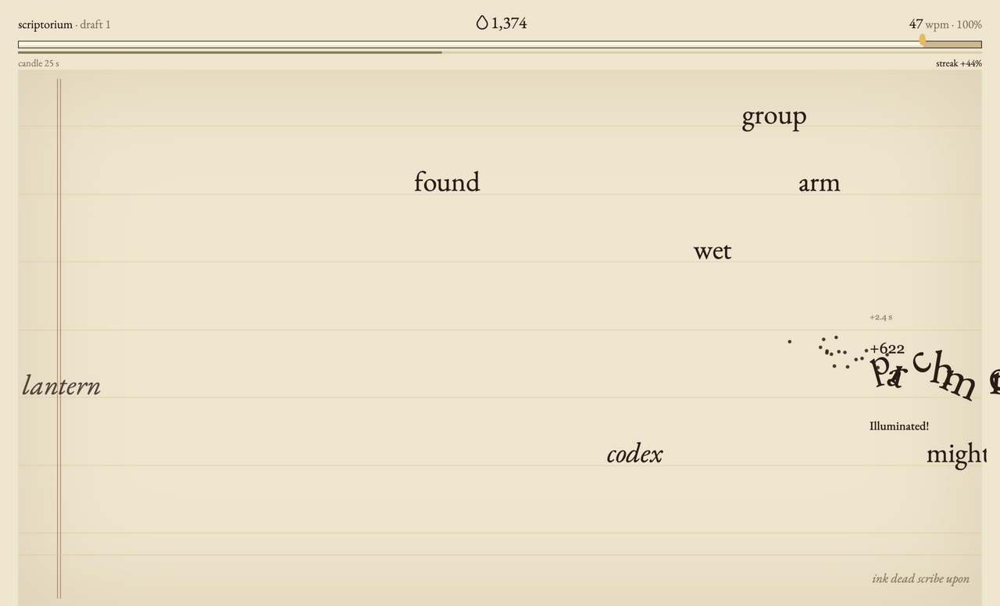
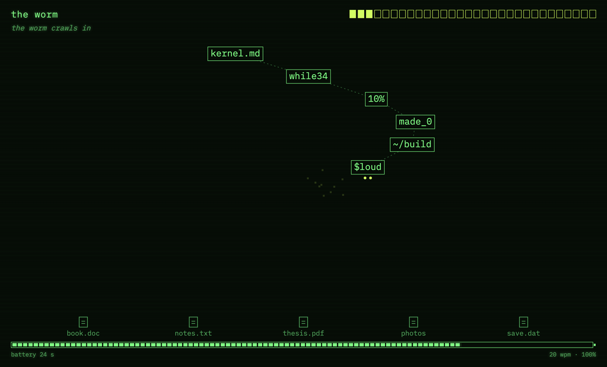

catch the words
Words drift across the page. Type the first letter to aim at one, the rest to catch it before it escapes.
fill the inkwell
Every word is ink. Each era has its own tree of ten upgrades, and every one of them makes the next draft better.
write the book
Buy the whole tree and the era's book opens: a boss with its own rules and its own music. Write it to reach the next era.
iscriptorium
Illuminated words by candlelight. The book: the Abbot dictates, you copy.
iiTypewriter
Capitals, punctuation and the bell. The book: the front page, before the press.
iiicomputer_
Bugs sw@p letters for symb0ls. The book: a worm that eats your files.
ivFuture
Whole phrases, arriving faint. The book: a machine that writes against you.


